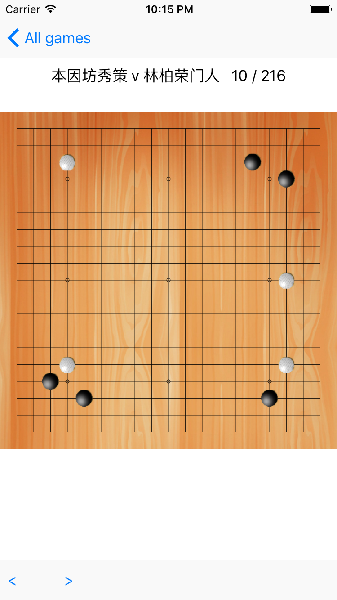

用Swift写围棋App－08绘制每一手棋
tags: 开发随笔
要绘制棋子其实不难：
- 首先，每一手棋要么是黑棋，要么是白棋，这个可以通过绘制UIImage来实现
let imgBlack = UIImage(named: "Black.png")
let imgWhite = UIImage(named: "White.png")
其次，每一手棋的位置信息，都已经在 Move对象中了。我们只需要挨个往棋谱上放就好了。
改进后的棋谱View代码如下：
import UIKit
class GobanView: UIView {
var moves:[Move]?
override func drawRect(rect: CGRect) {
let ctx = UIGraphicsGetCurrentContext()
let rec = CGContextGetClipBoundingBox(ctx)
let w = rec.size.width;
//back ground image
let background = UIImage(named:"board_back")
CGContextDrawImage(ctx, rec, background!.CGImage )
let space = w/20.0
drawLines(ctx!,space:space,w:w)
drawDots(ctx!,space:space)
if (moves != nil && moves?.count > 0) {
drawMoves(ctx!, stoneSize: space)
}
}
func drawLines(ctx:CGContext,space:CGFloat, w:CGFloat){
CGContextSetRGBStrokeColor(ctx, 0, 0, 0, 1)
CGContextSetLineWidth(ctx, 0.4)
CGContextBeginPath(ctx)
for(var i=0;i<=18;i++)
{
CGContextMoveToPoint(ctx, (CGFloat(i+1))*space, space)
CGContextAddLineToPoint(ctx, (CGFloat(i+1))*space, w-space)
CGContextStrokePath(ctx)
}
for(var i=0;i<=18;i++)
{
CGContextMoveToPoint(ctx, space,(CGFloat(i+1))*space);
CGContextAddLineToPoint(ctx,w-space, (CGFloat(i+1))*space);
CGContextStrokePath(ctx);
}
}
func drawDots(ctx:CGContext,space:CGFloat){
for (var i=0;i<=2;i++)
{
for(var j=0;j<=2;j++)
{
CGContextBeginPath(ctx);
CGContextAddArc(ctx, (CGFloat(1+3+6*i))*space ,CGFloat(1+3+6*j)*space, 2, 0, CGFloat(2.0*M_PI), 1);
CGContextStrokePath(ctx);
}
}
}
func drawMoves(ctx:CGContext,stoneSize:CGFloat ){
// chess
let imgBlack = UIImage(named: "Black.png")
let imgWhite = UIImage(named: "White.png")
let count = moves?.count
for (var i = 0; i < count; i++ )
{
let move = moves![i]
let imageRect = CGRectMake( (CGFloat(move.location.x)+0.5)*stoneSize,(CGFloat(move.location.y)+0.5)*stoneSize, stoneSize, stoneSize);
if move.type == .White
{
CGContextDrawImage(ctx, imageRect, imgWhite?.CGImage)
}else
{
CGContextDrawImage(ctx, imageRect, imgBlack?.CGImage )
}
}
}
}
现在，只需将棋谱信息传给棋谱GobanView就好了。
为了能一步步的演示，我们每次只需要传从第一手，到当前手就好了。核心代码如下：
let moves = _game.allMoves[0..<_currentMove]
_goban.moves = Array(moves)
_goban.setNeedsDisplay()
然后在GameViewController中加上前进和后退的事件:
@IBAction func backClick(sender:UIBarItem){
_currentMove -= 1
if (_currentMove < 0){
_currentMove = 0
}
showMoves()
}
@IBAction func forwardClick(sender:UIBarItem){
_currentMove += 1
if (_currentMove > _game.allMoves.count - 1){
_currentMove = _game.allMoves.count - 1
}
showMoves()
}
func showMoves(){
if _game.allMoves.count > 0 {
let moves = _game.allMoves[0..<_currentMove]
_goban.moves = Array(moves)
_goban.setNeedsDisplay()
_lblTitle.text = "\(_game.playerBlack) v \(_game.playerWhite) \(_currentMove + 1) / \(_game.allMoves.count)"
}
}
好了，激动人心的时刻到来了。
我们运用应用，效果如下：

太好了！
现在可以点击演示每一手棋了！
打谱的功能基本完成！
目前还有几个小问题。其中最大的问题在于，程序只知道加载所有的棋，不知道提子，也就是除去没有气的棋子。这个问题需要研究一下算法，我们后面再弄。
现在push最新的代码到github:https://github.com/marknote/GoTao
你可以编译，好好把玩一下了！